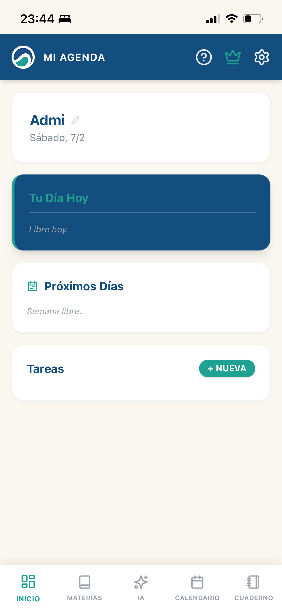
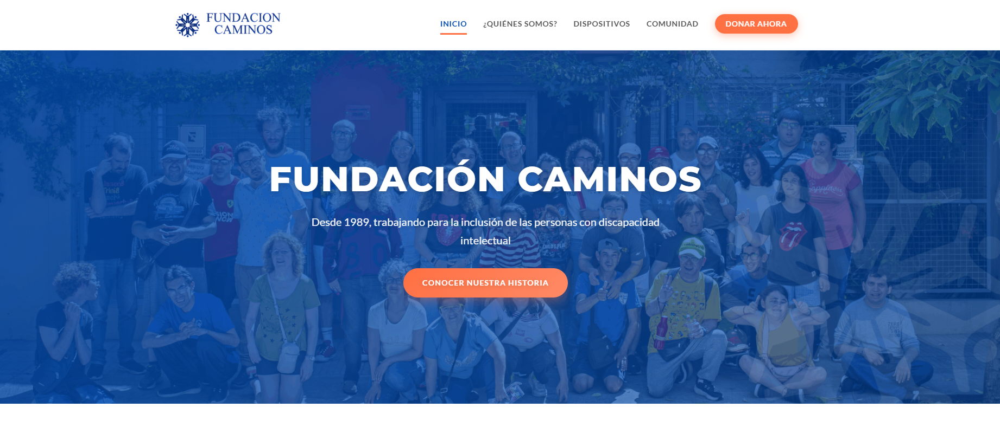
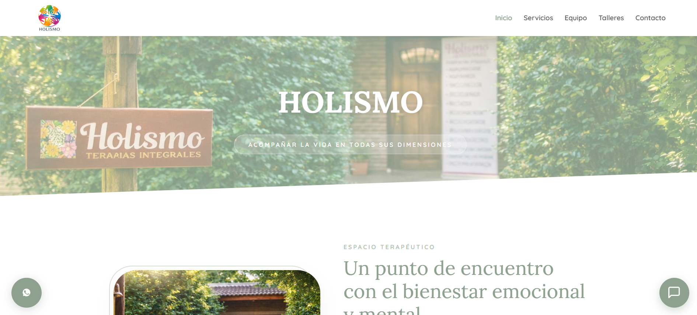
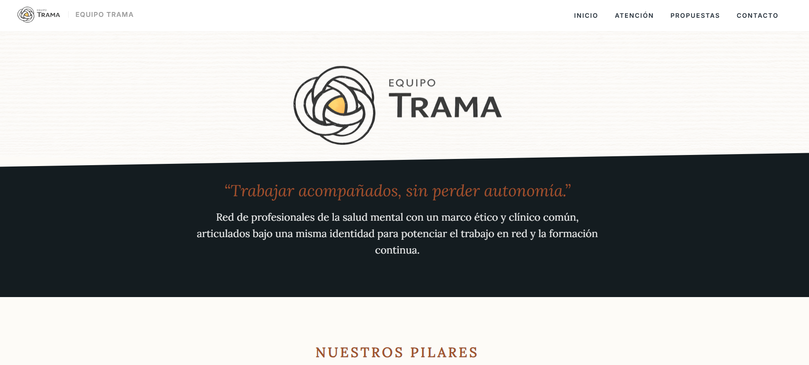
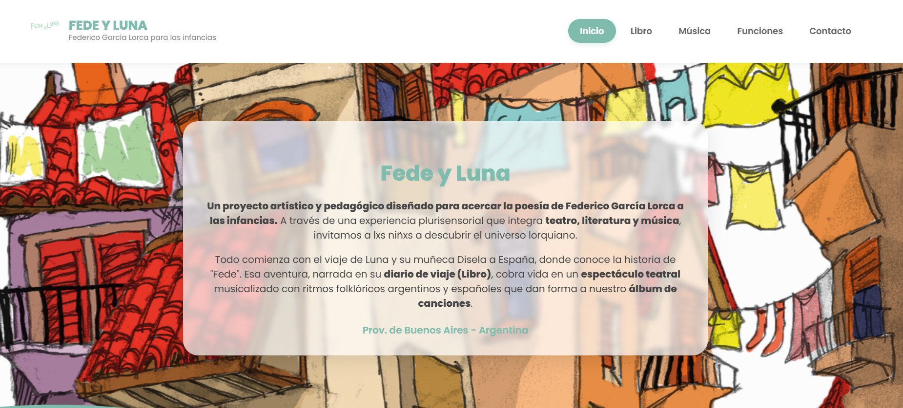
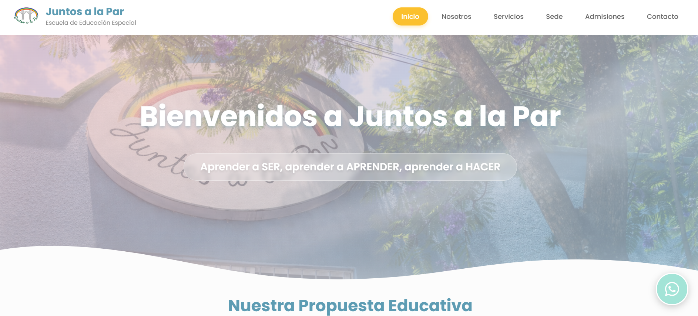
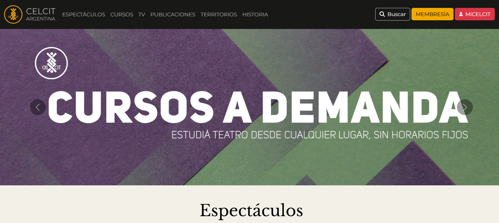

Herramientas que no encajan
Terminás armando soluciones alrededor de un sistema que nunca fue pensado para tu realidad.
NÓMADE · TECNOLOGÍA Y GESTIÓN
Trabajo en instituciones y sé lo que pasa cuando un software genérico no se amolda a la realidad cotidiana.
Por eso desarrollo herramientas, acompaño procesos y asesoro en accesibilidad desde una idea muy concreta:
Herramientas pensadas desde la realidad de quienes las usan.
POR QUÉ EXISTE NÓMADE
Lo viví trabajando en instituciones: muchas herramientas prometen ordenar el trabajo, pero terminan obligando a las personas a adaptarse a ellas. Para mí debería ser al revés.
Terminás armando soluciones alrededor de un sistema que nunca fue pensado para tu realidad.
La gestión cotidiana se llena de planillas, mensajes, documentos y tareas que dependen de una persona.
Hay tareas que podrían resolverse de forma más simple, pero nadie se tomó el tiempo de pensarlas desde adentro.
Una herramienta realmente útil tiene que contemplar cómo piensan, trabajan y se organizan las personas que la van a usar.
AHÍ APARECE NÓMADE
DE DÓNDE SALE ESTA IDEA
Nómade nace de mi trabajo en instituciones y de una pregunta que apareció una y otra vez: ¿por qué tenemos que acomodarnos nosotras/os a herramientas que fueron pensadas para una realidad completamente distinta? Acompaño a instituciones educativas, terapéuticas y de salud, organizaciones sociales, equipos y emprendimientos a pensar y construir herramientas que se amolden a su manera real de trabajar.
Nace de haber estado y seguir estando ahí: en aulas, instituciones, equipos docentes y espacios de gestión. Sé que detrás de cada registro, cada planilla y cada sistema hay personas que están haciendo lo mejor que pueden para que todo funcione. Mi propuesta es que la tecnología acompañe ese trabajo, en lugar de agregar otra dificultad.
Trabajo situado: conocer cómo funciona realmente la institución antes de decidir qué necesita.
Los sistemas se amoldan a las instituciones. No las instituciones a los sistemas.
Accesibilidad física, comunicacional y, especialmente, cognitiva: interfaces sencillas e intuitivas para todas y todos.
¿EN QUÉ PUEDO ACOMPAÑARTE?
Puede ser un sistema, una web, una automatización, una planilla inteligente, una asesoría de accesibilidad o varias cosas juntas. Lo importante es que tenga sentido para quienes la van a usar.
01 · GESTIÓN A MEDIDA
Pienso y desarrollo sistemas, registros, matrículas, actas, planillas inteligentes y automatizaciones según la forma de trabajo de cada institución.
02 · WEBS QUE SE PARECEN A VOS
Diseño webs institucionales y profesionales pensando en la identidad del proyecto, sus públicos y la accesibilidad desde el inicio.
03 · ACCESIBILIDAD
Asesorías de accesibilidad y acompañamiento para incorporar una mirada física, comunicacional y cognitiva en espacios, materiales y herramientas digitales.
04 · ACOMPAÑAMIENTO Y CAPACITACIÓN
Acompaño la implementación, capacito a los equipos y ajusto lo necesario para que la herramienta no quede “ahí”, sino que se vuelva parte del trabajo cotidiano.
¿Tenés una necesidad pero todavía no sabés cómo resolverla?
Contame qué te está pasandoALGUNOS PROYECTOS QUE YA ACOMPAÑÉ
Estos son algunos de los proyectos en los que pude transformar una necesidad concreta en una herramienta posible.

01 · SOFTWARE
Una herramienta nacida de una necesidad concreta de gestión docente: organizar asistencia, notas y seguimiento en un solo lugar.

02 · WEB
Un espacio institucional pensado para comunicar con claridad y accesibilidad.

03 · WEB
Una web pensada para acompañar la identidad y la forma de trabajo de un equipo interdisciplinario.

04 · WEB
Una presencia digital clara para un equipo de profesionales de la salud.

05 · WEB
Una web para contar el trabajo de una compañía de teatro y acercarlo a nuevos públicos.

06 · INSTITUCIÓN
Un proyecto institucional donde comunicación, gestión y accesibilidad necesitan ir de la mano.

07 · ACCESIBILIDAD
Rediseño accesible del entorno virtual de aprendizaje CELCIT, junto a Mobix.ar.
TRABAJAR JUNTAS/OS
No necesito que llegues sabiendo de tecnología. Necesito entender cómo funciona tu proyecto, qué necesitás y qué cosas hoy te están complicando.
Qué hacés, cómo trabajan y dónde aparece el problema.
Miramos qué ya existe y qué necesita realmente el equipo.
Buscamos una solución sencilla, accesible y posible para esa realidad.
Desarrollo, diseño, organizo o conecto lo que haga falta y lo vamos probando.
La incorporamos al trabajo cotidiano y ajustamos lo necesario.
EMPECEMOS POR EL PROBLEMA
No hace falta que sepas qué herramienta necesitás. Contame cómo trabajan hoy, qué les cuesta y qué les gustaría poder hacer de otra manera.
Hablemos por WhatsApp